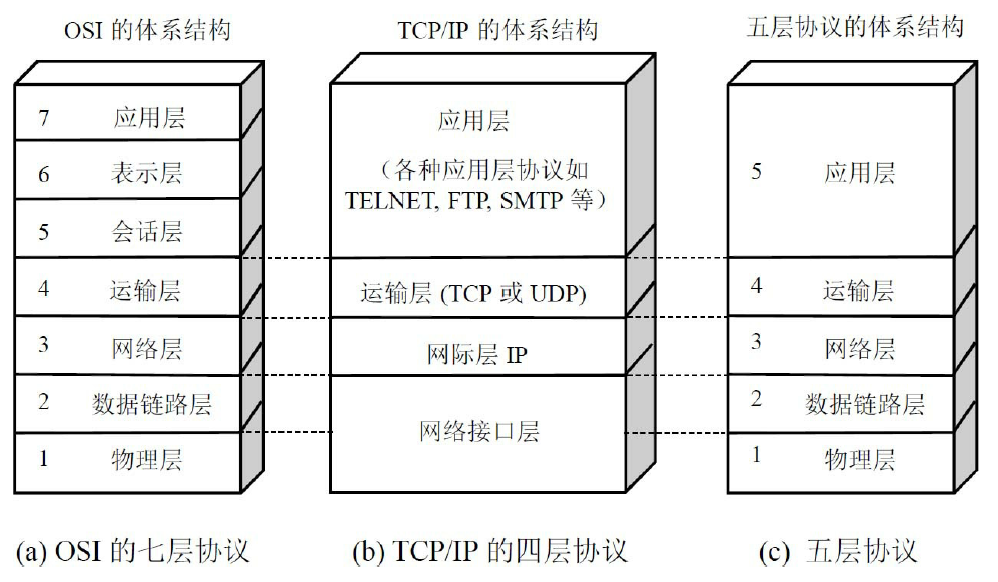

本文最后更新于：2020年6月30日 晚上
1.2 互联网概述
1.2.1网络的网络
计算机网络（简称为网络）由若干结点（node）和连接这些结点的链路（link）组成。网络中的结点可以是计算机、集线器、交换机或路由器等

(a)图三个计算机和一个节点组成了一个网络,上面一片云代表一个网络,(b)图中,很多网络连接起来组成更大的网络,成为网络的网络,即互联网
习惯上，与网络相连的计算机或手机等终端常称为主机（host）。
1.2.2 互联网基础结构发展的三个阶段
第一阶段是从单个网络ARPANET向互连网发展的过程
1969年美国国防部创建的第一个分组交换网ARPANET最初只是一个单个的分组交换网（并不是一个互连的
网络）。1983年TCP/IP协议成为ARPANET上的标准协议，使得所有使用TCP/IP协议的计算机都能利用互连网相互通信，因而人们就把1983年作为互联网的诞生时间。
internet和Internet的区别:
以小写字母i开始的internet（互连网）是一个通用名词，它泛指由多个计算机网络互连而成的计算机网络。在这些网络之间的通信协议（即通信规则）可以任意选择，不一定非要使用TCP/IP协议。
以大写字母I开始的Internet（互联网，或因特网）则是一个专用名词，它指当前全球最大的、开放的、由众多网络相互连接而成的特定互连网，它采用TCP/IP协议族作为通信的规则，且其前身是美国的ARPANET。
第二阶段的特点是建成了三级结构的互联网
从1985年起，美国国家科学基金会NSF（National Science Foundation）就围绕六个大型计算机中心建设计算机网络，即国家科学基金网NSFNET。它是一个三级计算机网络，分为主干网、地区网和校园网（或企业网）。
第三阶段的特点是逐渐形成了多层次ISP结构的互联网
1993年开始出现互联网服务提供者ISP（Internet Service Provider）。在许多情况下，ISP就是一个进行商业活动的公司，因此ISP又常译为互联网服务提供商。例如，中国电信、中国联通和中国移动等公司都是我国最有名的ISP。
1.3 互联网的组成
可以划分为以下两大块：
- 边缘部分 由所有连接在互联网上的主机组成。这部分是用户直接使用的，用来进行通信（传送数据、音频或视频）和资源共享
- 核心部分 由大量网络和连接这些网络的路由器组成。这部分是为边缘部分提供服务的（提供连通性和交换）
1.3.1 互联网的边缘部分
处在互联网边缘的部分就是连接在互联网上的所有的主机。这些主机又称为端系统（end system）
“主机A和主机B进行通信”，实际上是指：“运行在主机A上的某个程序和运行在主机B上的另一个程序进行通信”。由于“进程”就是“运行着的程序”，因此这也就是指：“主机A的某个进程和主机B上的另一个进程进行通信”。这种比较严密的说法通常可以简称为“计算机之间通信”。
在网络边缘的端系统之间的通信方式通常可划分为两大类：客户-服务器方式（C/S方式）和对等方式（P2P方式):
客户-服务器方式
上网发送电子邮件或在网站上查找资料时，都是使用客户-服务器方式（有时写为客户/服务器方式）。
客户（client）和服务器（server）都是指通信中所涉及的两个应用进程。客户-服务器方式所描述的是进程之间服务和被服务的关系。
客户程序的特点:
- 被用户调用后运行，在通信时主动向远地服务器发起通信（请求服务）。因此，客户程序必须知道服务器程序的地址。
- 不需要特殊的硬件和很复杂的操作系统。
服务器程序：
- 是一种专门用来提供某种服务的程序，可同时处理多个远地或本地客户的请求。
- 系统启动后即自动调用并一直不断地运行着，被动地等待并接受来自各地的客户的通信请求。因此，服务器程序不需要知道客户程序的地址。
- 一般需要有强大的硬件和高级的操作系统支持。
对等连接方式
对等连接（peer-to-peer，简写为P2P）是指两台主机在通信时并不区分哪一个是服务请求方哪一个是服务提供方。
对等连接方式从本质上看仍然是使用客户-服务器方式，只是对等连接中的每一台主机既是客户又同时是服务器。
对等连接工作方式可支持大量对等用户（如上百万个）同时工作。
1.3.2 互联网的核心部分
在网络核心部分起特殊作用的是路由器（router），它是一种专用计算机（但不叫做主机）。路由器是实现分组交换（packet switching）的关键构件，其任务是转发收到的分组，这是网络核心部分最重要的功能。
电路交换的主要特点
从通信资源的分配角度来看，交换（switching）就是按照某种方式动态地分配传输线路的资源。在使用电路交换通话之前，必须先拨号请求建立连接。当被叫用户听到交换机送来的振铃音并摘机后，从主叫端到被叫端就建立了一条连接，也就是一条专用的物理通路。这条连接保证了双方通话时所需的通信资源，而这些资源在双方通信时不会被其他用户占用。此后主叫和被叫双方就能互相通电话。通话完毕挂机后，交换机释放刚才使用的这条专用的物理通路（即把刚才占用的所有通信资源归还给电信网）。这种必须经过“建立连接（占用通信资源）→通话（一直占用通信资源）→释放连接（归还通信资源）”三个步骤的交换方式称为电路交换.如果用户在拨号呼叫时电信网的资源已不足以支持这次的呼叫，则主叫用户会听到忙音，表示电信网不接受用户的呼叫，用户必须挂机，等待一段时间后再重新拨号。
当使用电路交换来传送计算机数据时，其线路的传输效率往往很低。
分组交换的主要特点
分组交换则采用存储转发技术。下图表示把一个报文划分为几个分组后再进行传送。
通常我们把要发送的整块数据称为一个报文（message）。在发送报文之前，先把较长的报文划分成为一个个更小的等长数据段，例如，每个数据段为1024bit。在每一个数据段前面，加上一些由必要的控制信息组成的首部（header）后，就构成了一个分组（packet）。分组又称为“包”，而分组的首部也可称为“包头”。分组是在互联网中传送的数据单元。分组中的“首部”是非常重要的，正是由于分组的首部包含了诸如目的地址和源地址等重要控制信息，每一个分组才能在互联网中独立地选择传输路径，并被正确地交付到分组传输的终点。
主机和计算机的不同功能:
主机是为用户进行信息处理的，并且可以和其他主机通过网络交换信息。
路由器是用来转发分组的，即进行分组交换的。路由器收到一个分组，先暂时存储一下，检查其首部，查找转发表，按照首部中的目的地址，找到合适的接口转发出去，把分组交给下一个路由器。
各路由器之间必须经常交换彼此掌握的路由信息，以便创建和动态维护路由器中的转发表，使得转发表能够在整个网络拓扑发生变化时及时更新。
分组交换的特点:
- 传送数据之前不必先占用一条端到端的链路的通信资源,分组在哪段链路上传送才占用这段链路的通信资源
- 省去了建立连接和释放连接的开销，因而数据的传输效率更高
- 当网络中的某些结点或链路突然出现故障时，在各路由器中运行的路由选择协议（protocol）能够自动找到转发分组最合适的路径
为了提高分组交换网的可靠性，互联网的核心部分常采用网状拓扑结构
综上,分组交换的优点有:
三种交换方式在数据传送阶段的主要特点：
- 电路交换——整个报文的比特流连续地从源点直达终点，好像在一个管道中传送。
- 报文交换——整个报文先传送到相邻结点，全部存储下来后查找转发表，转发到下一个结点。
- 分组交换——单个分组（这只是整个报文的一部分）传送到相邻结点，存储下来后查找转发表，转发到下一个结点。
上图可知:
- 大量传输数据的时候,一般传送时间远远大于建立连接时间,则电路交换的传输速率较快
- 报文交换和分组交换相对电路交换相比,在传送突发数据时可提高整个网络的信道利用率
- 分组交换比比报文交换的时延小,具有更好的灵活性
1.5 计算机网络的类别
1.5.1 计算机网络的定义
计算机网络主要是由一些通用的、可编程的硬件互连而成的，而这些硬件并非专门用来实现某一特定目的（例如，传送数据或视频信号）。这些可编程的硬件能够用来传送多种不同类型的数据，并能支持广泛的和日益增长的应用。
根据这定义:
- 计算机网络所连接的硬件，并不限于一般的计算机，而是包括了智能手机。
- 计算机网络并非专门用来传送数据，而是能够支持很多种的应用（包括今后可能出现的各种应用）。
1.5.2 几种不同类别的计算机网络
按照网络的作用范围进行分类
| | 广域网 | 城域网 | 局域网 | 个人区域网 |
| ———— | ————————————————- | ———————————————— | ———————————————————— | —————————————————————————————— |
| 名称 | WAN（Wide Area Network） | MAN（Metropolitan Area Network） | LAN（Local Area Network） | PAN（Personal Area Network） |
| 作用范围 | 几十到几千km | 5～50km | 1km左右 | 10m左右 |
| 特点 | 互联网的核心部分,有较大的通信容量 | 将多个局域网进行互连 | 用微型计算机或工作站通过高速通信线路相连 | 把属于个人使用的电子设备（如便携式电脑等）用无线技术连接起来的网络 |按照网络的使用者进行分类
- 公用网（public network）
- 专用网（private network）
1.6 计算机网络的性能
1.6.1 计算机网络的性能指标
速率: 速率的单位是bit/s（bps,比特每秒）
带宽:（bandwidth）:某通道传送数据的能力，因此网络带宽表示在单位时间内网络中的某信道所能通过的“最高数据率”,单位bit/s，是“比特每秒”。
吞吐量（throughput）表示在单位时间内通过某个网络（或信道、接口）的实际的数据量。吞吐量受网络的带宽或网络的额定速率的限制
时延（delay或latency）是指数据（一个报文或分组，甚至比特）从网络（或链路）的一端传送到另一端所需的时间。
时延分以下四个:
发送时延:发送时延（transmission delay）是主机或路由器发送数据帧所需要的时间:
传播时延:传播时延（propagation delay）是电磁波在信道中传播一定的距离需要花费的时间。
处理时延:主机或路由器在收到分组时要花费一定的时间进行处理，例如分析分组的首部、从分组中提取数据部分、进行差错检验或查找适当的路由等
- 排队时延:分组在经过网络传输时，要经过许多路由器。但分组在进入路由器后要先在输入队列中排队等待处理。在路由器确定了转发接口后，还要在输出队列中排队等待转发。这就产生了排队时延。
由上可知:
时延带宽积:
往返时间RTT:RTT（Round-Trip Time）
利用率:利用率有信道利用率和网络利用率两种
- 信道利用率指出某信道有百分之几的时间是被利用的（有数据通过）。完全空闲的信道的利用率是零。
- 网络利用率则是全网络的信道利用率的加权平均值。
信道利用率并非越高越好。这是因为，根据排队论的理论，当某信道的利用率增大时，该信道引起的时延也就迅速增加。令$D_0$表示网络空闲时的时延，D表示网络当前的时延，那么在适当的假定条件下，可以用下面的简单公式来表示D，$D_0$和利用率U之间的关系:
这里U是网络的利用率，数值在0到1之间,因此我们必须有这样的概念：信道或网络的利用率过高会产生
非常大的时延
1.6.2 计算机网络的非性能特征
费用,质量,标准化,可靠性,可扩展性和可升级性,易于管理和维护
1.7 计算机网络体系结构
1.7.2 协议与划分层次
网络协议也可简称为协议。更进一步讲，网络协议主要由以下三个要素组成：
（1）语法，即数据与控制信息的结构或格式；
（2）语义，即需要发出何种控制信息，完成何种动作以及做出何种响应；
（3）同步，即事件实现顺序的详细说明。
分层可以带来很多好处。如：
- 各层之间是独立的。
- 灵活性好。
- 结构上可分割开。
- 易于实现和维护。
- 能促进标准化工作。
通常各层所要完成的功能主要有以下一些（可以只包括一种，也可以包括多种）：
- 差错控制 使相应层次对等方的通信更加可靠。
- 流量控制 发送端的发送速率必须使接收端来得及接收，不要太快。
- 分段和重装 发送端将要发送的数据块划分为更小的单位，在接收端将其还原。
- 复用和分用 发送端几个高层会话复用一条低层的连接，在接收端再进行分用。
- 连接建立和释放 交换数据前先建立一条逻辑连接，数据传送结束后释放连接。
计算机网络的各层及其协议的集合就是网络的体系结构（architecture）。
1.7.3 具有五层协议的体系结构

应用层（application layer）
应用层协议定义的是应用进程间通信和交互的规则
应用层交互的数据单元称为报文（message）
任务是通过应用进程间的交互来完成特定网络应用
域名系统DNS，HTTP协议，电子邮件的SMTP协议均是应用层的协议
运输层（transport layer）
运输层的任务就是负责向两台主机中进程之间的通信提供通用的数据传输服务
运输层主要的协议是:
- 传输控制协议TCP（Transmission Control Protocol）——提供面向连接的、可靠的数据传输服务，其数据传输的单位是报文段（segment）。
- 用户数据报协议UDP（User Datagram Protocol）——提供无连接的、尽最大努力（best-effort）的数据传输服务（不保证数据传输的可靠性），其数据传输的单位是用户数据报。
网络层（network layer）
网络层负责为分组交换网上的不同主机提供通信服务。在发送数据时，网络层把运输层产生的报文段或用户数据报封装成分组或包进行传送。在TCP/IP体系中，由于网络层使用IP协议，因此分组也叫做IP数据报，或简称为数据报。
数据链路层（data link layer）
数据链路层将网络层交下来的IP数据报组装成帧（framing），在两个相邻结点间的链路上传送帧（frame）。每一帧包括数据和必要的控制信息（如同步信息、地址信息、差错控制等）。
主要作用是:提取数据,上交网络层,差错检测
物理层（physical layer）
物理层要考虑用多大的电压代表“1”或“0”，以及接收方如何识别出发送方所发送的比特。物理层还要确定连接电缆的插头应当有多少根引脚以及各引脚应如何连接。
传递信息所利用的一些物理媒体，如双绞线、同轴电缆、光缆、无线信道等，并不在物理层协议之内而是在物理层协议的下面。
下图是主机1的应用进程AP1向主机2的应用进程AP2传送数据的过程,$H1到H_5$是加入的控制信息,物理层是数据流传送所以不需要控制信息.当到达路由器后,会从第一到第三层,根据首部$H{2}$的的目的地址查找路由器中的转发表，找出转发分组的接口，然后往下传送到第2层，加上新的首部和尾部后，再到最下面的第1层
1.7.4 实体、协议、服务和服务访问点
实体:表示任何可发送或接收信息的硬件或软件进程
协议:控制两个对等实体（或多个实体）进行通信的规则的集合
协议和服务的区别:
- 协议的实现保证了能够向上一层提供服务
- 使用本层服务的实体只能看见服务而无法看见下面的协议,下面的协议对上面的实体是透明的
- 协议是“水平的”，即协议是控制对等实体之间通信的规则。但服务是“垂直的”，即服务是由下层向上层通过层间接口提供的
第n层向上面的第n＋1层所提供的服务实际上已包括了在它以下各层所提供的服务。第n层的实体对第n＋1层的实体就相当于一个服务提供者
1.7.5 TCP/IP的体系结构
本章总结
计算机网络（可简称为网络）把许多计算机连接在一起，而互连网则把许多网络连接在一起，是网络的网络
以小写字母i开始的internet（互连网）是通用名词，它泛指由多个计算机网络互连而成的网络。在这些网络之间的通信协议（即通信规则）可以是任意的。
以大写字母I开始的Internet（互联网）是专用名词，它指当前全球最大的、开放的、由众多网络相互连接而成的特定互连网，并采用TCP/IP协议族作为通信规则，且其前身是美国的ARPANET。Internet的推荐译名是“因特网”，但很少被使用。
互联网现在采用存储转发的分组交换技术，以及三层ISP结构。互联网按工作方式可划分为边缘部分与核心部分。主机在网络的边缘部分，其作用是进行信息处理。路由器在网络的核心部分，其作用是按存储转发方式进行分组交换。
计算机通信是计算机中的进程（即运行着的程序）之间的通信。计算机网络采用的通信方式是客户–服务器方式和对等连接方式（P2P方式）。客户和服务器都是指通信中所涉及的应用进程。客户是服务请求方，服务器是服务提供方。
按作用范围的不同，计算机网络分为广域网WAN、城域网MAN、局域网LAN和个人区域网PAN。
计算机网络最常用的性能指标是：速率、带宽、吞吐量、时延（发送时延、传播时延、处理时延、排队时延）、时延带宽积、往返时间和信道（或网络）利用率。
网络协议即协议，是为进行网络中的数据交换而建立的规则。计算机网络的各层及其协议的集合，称为网络的体系结构。
五层协议的体系结构由应用层、运输层、网络层（或网际层）、数据链路层和物理层组成。运输层最重要的协议是TCP和UDP协议，而网络层最重要的协议是IP协议。
本博客所有文章除特别声明外，均采用 CC BY-SA 4.0 协议 ，转载请注明出处！